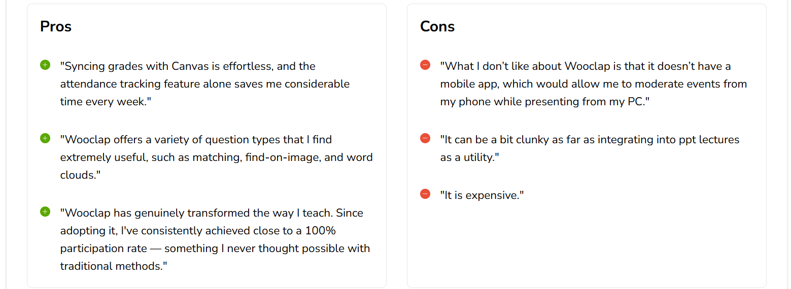
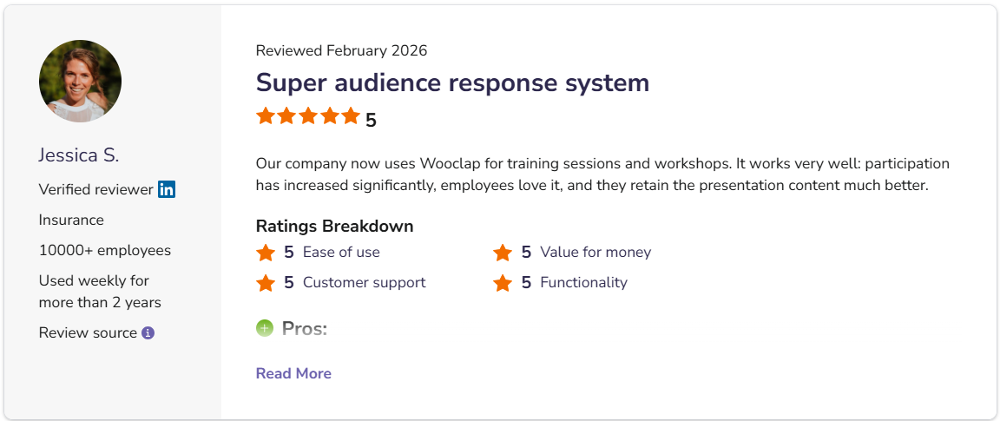
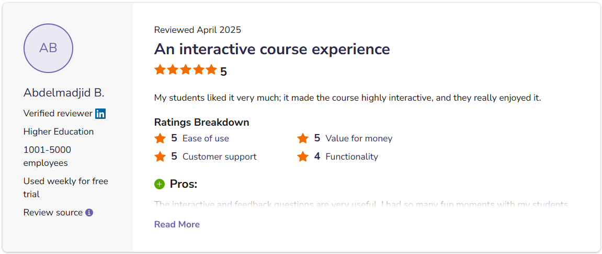
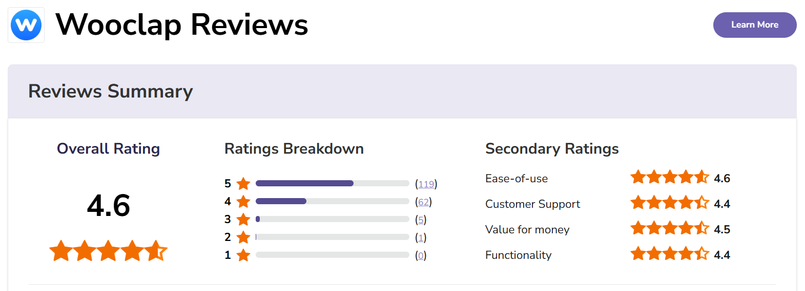

Introduction
Wooclap is an interactive platform designed specifically for educators and presenters to capture their audience's attention in real-time, whether in an actual classroom or a virtual classroom.
Wooclap is an interactive learning platform that allows presenters to engage their audience through real-time questions and activities. It enables teachers, students, and speakers to create interactive presentations using features such as multiple-choice questions, word clouds, polls, open-ended questions, and quizzes.
Top Features: matching, fill-in-the-blanks, image labeling, Message wall + “I am confused” button, Brainstorming & Collaboration Tools, Competition mode with leaderboard, Attendance tracking + LMS integration
Wooclap is an interactive platform designed specifically for educators and presenters to capture their audience's attention in real-time, whether in an actual classroom or a virtual classroom.
This video explores various features and available question types of Wooclap.
This video explores the question editor of multiple choices and poll.
This video explores the question editor of poll.
This video explores the question editor of label and image and word cloud.
See what our users say about Mentimeter and how it enhances engagement in presentations.



